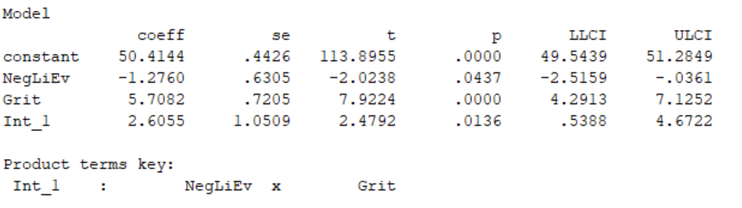
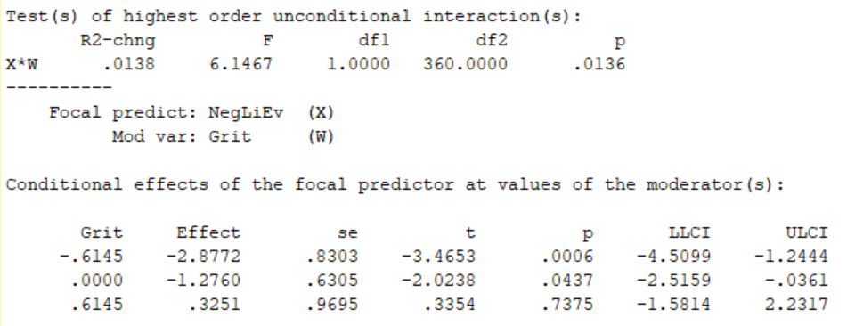

Beyond Regression - What’s Next?
Kamarul Ariffin Mansor
What is a Process Macro?
PROCESS is an observed variable OLS and logistic regression path analysis modeling tool.
The PROCESS macro is developed by Andrew F. Hayes.
It is widely used through the social, business, and health sciences for estimating direct and indirect effects in single and multiple mediator models (parallel and serial), two and three way interactions in moderation models along with simple slopes and regions of significance for probing interactions, and conditional indirect effects in moderated mediation models with a single or multiple mediators or moderators.
What is “Conditional Process Analysis?”
Conditional process analysis is a modeling strategy undertaken with the goal of
describing the conditional or contingent nature of the mechanism(s) by which a variable transmit its effect on another, and testing hypotheses about such contingent effects.
A melding of two ideas conceptually and analytically:
“Process aanalysis”, used to quantify and examine the direct and indirect pathways through which an antecedent variable X and transmits its effect on a consequent variable Y through an intermediary M. Beeter known as
mediation analysisthese days.“Moderation analysis” used to examine how the effect of an antecedent X on a consequent Y depends on a third moderator variable M (
interaction).

Installation
Go to process macro website to download the package Download Process Macro
Extract the Process Macro .zip file downloaded.
in SPSS, go to Extension - Utilities - Install Custom Dialog (Compatibility Mode)
In dialog box File name, locate your process.spd file, then click Open
Your Process Macro can be found under the tab Analyze - Regression

SPSS Hayes Process Macro vs SPSS AMOS SEM
PROCESS MACRO
PROS
- No extra software… macro in SPSS, SAS, R
- Ease of use… preset models
- Multicategorical Dummy Coding
- Probing Interaction & Johnson-Neyman points
- Can run analysis with relatively small samples
CONS
- Only one DV in model testing
- Uses composite variables - no measurement error or model fit
- Only one IV in moderation testing
- No reciprocal causation model testing
- Missing data
AMOS SEM
PROS
- Assess measurement properties of contructs in structural testing
- Not limited in model building
- Better at capturing collective effect than individual relationships
- Modification indices
CONS
- Extra software
- Relatively large sample size required
- Data prep before SEM analysis
- Model building is time consuming
Moderation vs Mediation Analysis
Key differences from a deterministic point of view:
A mediator is the reason for the effect and acts like a “middleman” in the relationship between independent and dependent variables. If the mediator variable is removed, the causal link between independent and dependent variables disappears.
A mediator variable MUST be a causal result of the independent variable and a causal precursor of the dependent variable. In other words, a mediator contextualizes the effect.
A moderator variable changes the effect (level of strength, direction) between the independent and dependent variables.
A moderator variable MUST NOT be the causal effect of the independent variable.
Moderating Variable
A moderator specifies the conditions under which a given effect occurs, as well as the conditions under which the direction (nature) or strength of an effect vary.
Baron and Kenny (1986, pp. 1174, 1178) describe a moderator variable as the following:
A qualitative (e.g., sex, race, class) or quantitative variable … that affects the direction and/or strength of a relation between an independent or predictor variable and a dependent or criterion variable … a basic moderator effect can be presented as an interaction between a focal independent variable and a factor (the moderator) that specifies the appropriate conditions for its operation.
Moderator variables are typically introduced when there is an unexpectedly weak or inconsistent relation between a predictor and a criterion variable.
A moderator variable is one that affects the relationship between two variables, so that the nature of the impact of the predictor on the criterion varies according to the level or value of the moderator (Holmbeck, 1997)
A moderator interacts with the predictor variable in such a way as to have an impact on the level of the dependent
Various Interaction Pattern
The Fan Effect
“Catastrophizing functioned as an exacerbator for the positive relationship noted between reported stress intensity and reported depression. The highest level of depressive symptoms occurred in individuals who reported high stress intensity and high levels of catastrophizing.”
The Triangle Pattern
“The process of savoring exacerbates the relationship between the experience of positive events and the outcome of happiness. An individual who savors very little does not show any significant relationship between positive events and happiness, but someone who savors a lot shows a strong positive relationship. The greatest happiness is reported by those participants who reported experiencing high levels of positive events and also reported savoring to a high degree.”
The Funnel Pattern
“Academic achievement by adolescents varies by degree of challenge in the academic environment moderated by the amount of parental warmth. The degree of academic challenge is unrelated to academic achievement under conditions of average parental warmth. In contrast, a positive relationship between academic challenge and academic achievement was noted under conditions of high parental warmth, but a negative relationship was noted under conditions of low parental warmth. The highest academic achievement scores were found for adolescents in high challenge environments who had warm parents, whereas the lowest academic achievement scores were obtained for adolescents in high challenge environments who had parents lacking in warmth.”
The Crossover Pattern (Butterfly)
“No main effect for manipulated power nor a main effect for manipulated similarity were noted on ratings of liking, but a significant interaction was obtained. Under conditions of average manipulated similarity, no relationship was noted between manipulated power and liking. However, under conditions of high manipulated similarity, a positive relationship was found between manipulated power and liking. The opposite trend was seen under conditions of low manipulated similarity.”
How to write Hypothesis?
Tip
H1: The positive relationship between satisfaction and loyalty will be stronger when perceived image is high.
Tip
H2: The positive relationship between satisfaction and loyalty would be stronger for male compared to female.
Tip
H3: Body Mass Index (BMI) moderates the relationship between exercise and weight loss, such that for those with a low BMI, the effect is negative (i.e., you gain weight - muscle mass), and for those with a high BMI, the effect is positive (i.e., exercising leads to weight loss)
Suggested Readings
Hayes, A.F., & Cai, L. (2007). Using heteroskedasticity-consistent standard error estimators in OLS regression: An introduction and software implementation. Behavior Research Methods, 39, 709-722.
Hayes, A.F. (2022). Introduction to mediation, moderation, and conditional process analysis: A regression-based approach. New York: The Guilford Press.
Field, A. (2018). Discovering statistics using IBM SPSS statistics (5th ed). Los Angeles: Sage.
Jose, P.E. (2013). Doing statistical mediation and moderation. New York: The Guilford Press.
What is Mediation in Research?
Definition: A mediation variable explains the “why” and “how” relationship between the independent variable (X) and the dependent variable (Y). In other words, mediation contextualizes the reason for the effect.
In mediation analysis, the independent variable does not infer directly the dependent variable but rather through a third variable mediator or “middleman” between the two. In other words, if we remove the mediator variable, the causal effect between X and Y variables will cease to exist.
A mediated model consists of two paths respectively the direct effect path (path A) between X and Y and the indirect effect path (path B and C) respectively from X → Me → Y as seen in the following figure.
Module 1
Model 1a - One Moderator (Basic Moderation) - Continuous Moderator
Introduction
Example Variables: 1 predictor X, 1 moderator W, 1 outcome Y
Preliminary-Notes:
Model 1 assumes that:
1. The primary IV (variable X) is continuous or dichotomous.
2. Any moderators (variables W, V, Q, Z) are continuous, though the dichotomous moderators can be handled.
Dataset: Jose_2013_data.sav
How to run in SPSS Process Macro?
Model Framework.
Analyze > Regression > PROCESS v4.0 by Andrew F. Hayes
Insert variables (Y, X, and W) and choose Model 1
Click Options button:
- check on Generate code for visualizing interactions
- Mean center - choose Only continuous variables that define products.
- Conditioning values - choose -1SD, Mean, +1SD
- check on Johnson-Newman output
- click Continue
click OK to run analysis
Reading the output
Description of Model along with the different variables where Y is Dependent Variable, X is Independent Variable, and W is the Moderating Variable.
Model Summary, provides summary of the model with \(R\), \(R^2\), \(F\) statistic, and \(p\) value for the overall model.
Next, is the coefficients, with impact of DV (Hope),IV (Negative Life Events), and the interaction effect to assess if there is moderation (Grit) or not.

In this example, since the interaction effect is significant, Grit moderates the relationship between Negative Life Events and Hope.
Test of unconditional interaction, this shows the change in \(R^2\) due to interaction \((X*W)\), this is also significant.

Johnson-Newman intervals and simple slope analysis
Johnson-Newman intervals tells you the range of values of the moderator in which the slope of the predictor is significant vs. nonsignificant at a specified alpha level.
In simple terms Johnson-Newman identifies regions in the range of the moderators variable where the effect of the focal predictor on the outcome is statistically significant and non significant.
Data Visualization
There are two ways to draw the interaction path in order to give you a clearer visualization on the effects of moderator on the relationship between the predictor and the outcome variable.
Using the SPSS syntax
- copy the script from the process macro output.
- in SPSS, open a new syntax file
- paste the script into your syntax file
- click Run button to create your interaction graph
Using the StatsTool package created by James Gaskin
- link to download the StatTools Package -> Download StatTools
Reporting Results
The study assessed the moderating role of
Griton the relationship betweenNegative Life EventsandHope. The results revealed a positive and significant moderating impact ofGriton the relationship betweenNegative Life EventsandHope(b = 2.6055, t = 2.4792, p = .0136), supporting H1. Moderation analysis summary is presented in Table 1.Results of simple slope analysis conducted to better understand the nature of the moderating effects are shown in Figure 1. As can be seen in Figure 1, the line is much steeper for Low
Grit. This shows that at LowGrit, the impact ofNLEonHopeis much stronger in comparison to HighGrit. Also shown in the figure, as the level ofGritincreased, the strength of the relationship betweenNLEandHopeincreased. This is due to the positive slope coefficient obtained and the negative impact ofNLEandHope.
Module 2
Model 1
Basic Moderation
1 Categorical Moderator (Binary)
Introduction
Example Variable: 1 predictor X,, 1 moderator W, 1 outcome Y
Preliminary Notes
Model 1 assumes that:
- The primary IV (variable X) is continuous
- The moderator is categorical with two categories (binary)
- Dataset: categorical_moderation_example.sav

Problem Hypothesis
The basic relationship under investigation is the association between social support (X) and depression (Y), and let us assume that this is significant and negative. Specifically, someone who experiences a high level of social support should also report being less depressed.
The ModV (W) is introduced because we are interested in whether gender might affect this basic relationship.
For the moderation hypothesis, someone might envision one of two possibilities:
that the association between social support and depression will be greater for males because they report lower levels of both variables than females; that is, the association is more salient, or
someone might hypothesize that the association will be greater for females because they are more attuned to the emotional landscape of the psyche.
My view was that the former prediction was more likely to be obtained than the latter, so I sought to examine a data set to determine which of these possible outcomes would be supported. The proposed moderation, if it exists, should be evident in the interaction term (XW) predicting the outcome (Y).
How to run in SPSS Process Macro?
Analyze > Regression > PROCESS v4.0 by Andrew F. Hayes
Insert variables (Y, X, and W) and choose Model 1
Click Options button:
- check on Generate code for visualizing interactions
- Mean center - choose No centering.
- click Continue
click OK to run analysis
Reading the results
It was predicted that males would evidence a stronger negative relationship between social support and depression than females because males’ use of social support is less common and may be more salient.
A regression analysis was performed to test this moderation hypothesis: Social support was the independent variable, gender was the moderating variable, and depression was the dependent variable.
The social support variable was multiplied with the dummy-coded gender variable, and the two main effects and the interaction term were used in a hierarchical regression to predict depression.
A significant main effect for gender was obtained (b = .92, p = .007), and it signified that females’ depression levels, on average, were higher than males’ depression levels.
But this main effect was qualified by the significant interaction (b = -.82, p = .009), which was graphed using the techniques recommended by Aiken and West (1991; see Figure).
The figure shows that females manifested a steeper slope between social support and depression than males.
Simple slope analyses yielded the result that females manifested a significant negative slope, -0.60, p < .001, whereas males evidenced a nonsignificant slope, -0.09, p = .60.
This result suggests that females’ differential use of social support was significantly related to levels of depression, whereas no such association was noted for males.
Further, the largest difference in self-reported depression between the genders occurred under conditions of low social support, whereas males’ and females’ levels of depression were virtually identical under conditions of high social support.
Module 4
Model 4 - Mediation
Introduction
Up to this point, we have focused on how to perform moderation analysis using the Process Macro.
Let’s now examine how the influence between two constructs may take an indirect path through a third variable called a mediator.
In this situation, the third variable will intervene on the influence of the two constructs.
In testing if “mediation” or the presence of a mediator in a model, you need to understand some of the terminology that is used, such as direct effect, indirect effect, and total effect.
Review
Total Effect
c in the relationship between X and Y is the total effect.
Direct-Indirect-Effect
A direct effect is simply a direct relationship between an independent variable and a dependent variable in presence of the Mediator (c').
An indirect effect is the relationship that flows from an independent variable to a mediator and then to a dependent variable (a*b).
The term total effect is the combined influence of the direct effect between two constructs and the indirect effect flowing through the mediator (c = c' + a*b).
How to Test Mediation?
For our examples, we will be using a dataset containing continuous measures of student achievement, performance goals, mastery goals, interest, and anxiety. We also have a dummy coded variable reflecting gender identification (coded 0=identified male, 1=identified female).
Dataset: mediation_example_data.sav
Mediation Model Framework
We are testing whether the effect of mastery goals on student achievement is mediated by interest. This is an example of a simple mediation model.
How to run in SPSS Process Macro?
Analyze > Regression > PROCESS v4.0 by Andrew F. Hayes
Insert variables (Y, X, and M) and choose Model 4
Click Options button:
- select Show total effects ... and Standardized Effects ...
- click Continue
click OK to run analysis
Reading the Output
Description of Model along with the different variables where Y is the Dependent Variable, X is the Independent Variable, and M is the Mediating Variable.
Notice that for this example there are two Model Summary presented.
Model Summary, provides summary of the model with R, , F statistic, and value for the overall model.
mastery -> interest (Model Summary 1 - path a)
We see that in the first (simple) regression, mastery goals is a significant (positive) predictor of interest (b=.7701, s.e.=.0858, p<.001). This coefficient reflects the direct effect of mastery on interest within the path model. [Notice that the standardized path coefficient is also provided, which is .6073.]
[mastery & interest] -> achieve (Model Summary 2 - path b and c')
We see that in the second regression, both mastery goals (b=.3613, s.e.=.0768, p<.001) and interest (b=.2106, s.e.=.0606, p=.0007) are significant, positive predictors of achievement. These coefficients reflect the direct effects of both interest (path
b) and mastery goals (pathc') on achievement within the path model. [The standardized path coefficients for this portion of the model are .3967 and .2932 for mastery and interest, respectively.]
mastery -> achieve (Model Summary 3 - path c)
We see that mastery goals is significant positive predictor of achievement (b=.5235, s.e.=.0634, p<.0001). Here, the output provide the total effect (path c) of IV to DV without the presence of the mediator. [The standardized path coefficient is .5748]
Important
The unstandardized indirect effect (.1622) of interest is calculated as the product of paths a (.7701) and b (.2106) from the previous regression models.
This indirect effect is tested using bootstrap standard errors and confidence intervals.
The null hypothesis is that the population indirect effect is zero, whereas the alternative is that the population indirect effect is non-zero. So if zero falls between the lower and upper bound of the confidence interval (again, the default is 95%), then you maintain the null. If zero falls outside of the interval, then you reject the null.
Here, we reject the null.
The total effect of X on Y, computed as DE + IE = .3613 + .1622 = .5325. Because zero (the null) does not fall between the lower and upper bound of the 95% confidence interval, we infer that total effect of mastery goals on achievement is significantly different from zero.
The c_cs is the completely standardized total effect. It is computed as c_ps * Sx, where Sx is the standard deviation for X (in this case, mastery goals).
The standard deviation for the X (mastery) variable is 1.399233. So, the completely standardized total effect is: .4108* 1.399233 = .5748.
The c’_cs is the completely standardized direct effect. It is computed as c’_ps * Sx, where Sx is the standard deviation for X. The completely standardized direct effect is: .2835* 1.399233 = .3967.
The partially standardized indirect effect is computed the unstandardized indirect effect divided by the standard deviation for Y: i.e., ab/ Sy. The standard deviation for Y is (again) 1.274432. As such, the partially standardized indirect effect is: .1622/ 1.274432 = .127.
The standardized indirect effect is computed as the product of the standardized paths ‘a’ and ‘b’: IE=.6073*.2932=.178. We see this effect is significant, as 0 does not fall between the lower and upper bound of the confidence interval. [Note: This effect is also computed by multiplying the partially standardized indirect effect by the standard deviation for X.]
For more details, see Hayes (2018, p. 134-135).
Model Summary 1
Model Summary 2
Model Summary 3
TOTAL, DIRECT, AND INDIRECT EFFECTS OF X ON Y
References
Baron, R.M., Kenny, D.A. (1986). The mediator-moderator distinction in social psychological research: Conceptual, strategic, and statistical considerations. Journal of Personality and Social Psychology, 51, 1173-1182. [Downloaded June 24 from https://www.sesp.org/files/The%20Moderator-Baron.pdf]
Hayes, A.F. (2022). Introduction to mediation, moderation, and conditional process analysis: A regression-based approach. New York: The Guilford Press.
Thank You

Kamarul Ariffin Mansor
Department of Mathematical Sciences
Faculty of Computer and Mathematical Sciences
UiTM Kedah
eMail: ariff118@uitm.edu.my
mobile: +60 12 433 6901
website: https://ariff118.github.io/kamansor.github.io
Overview of SPSS Process Macro